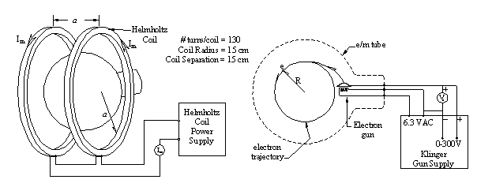
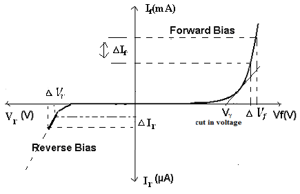

ARIC MOILANEN, GREG WAGNER, JEREMY WINSETT, FRANCIS ZOLADZ
Abstract: An e/m apparatus was used to formulate a simple method for measuring e/m, the charge-to-mass ratio of the electron. Using a e/m tube filled with helium, Helmholtz Coils, a mirrored scale and power supply; radius data, voltage data, and current data were collected and plotted on a non-linear plot. Utilizing the relationship between the Lorentz force and Centripetal force, a model was derived for the motion of electrons in the e/m apparatus that was used to linearize the data. The linearized plot yielded a value for e/m of 2×10^11 .1×10^11 C/kg, which agrees with the accepted value of 1.758×10^11 C/kg. The results of this experiment could be improved by having several different people take measurements for radius and computing an average, and by restricting measurements to larger circles, where the observer could more easily take radius measurements.
ARIC MOILANEN, GREG WAGNER, JEREMY WINSETT, FRANCIS ZOLADZ
Abstract: A simple circuit was created with a diode, power supply, and a decade resistor box. Using a voltmeter and an ammeter, voltage and current data were collected and plotted on a non-linear plot. Utilizing the Shockley diode equation, a model was derived that was used to linearize the data. The linear plot yielded a value for k of (2 ± .2) x10-23 J/K, which, considering our ideality factor of 1.5, agrees with the accepted value of 1.38x10-23 J/K. The results of this experiment could be improved by using a less temperamental voltage source, using a more accurate voltmeter, and by using a more complete theoretical model.
ARIC MOILANEN, GREG WAGNER, JEREMY WINSETT, FRANCIS ZOLADZ
Abstract: A helium neon laser was setup on an optics bench approximately one meter in length. When turned on, the laser beam passes through two lenses designed to achieve the desired beam width. At the end of the optics bench, opposite of the laser, a rotating mirror was placed to reflect the beam to a stationary mirror 11.5 meters away. The stationary mirror serves and a retroreflector, sending the beam back along its original path, striking the rotating mirror a second time. As the beam travels back towards the laser source, a beam splitter is placed in its path to send the light into an eyepiece where an image point can be observed, and its location is recorded. When the rotational velocity of the mirror is increased, a deflection of the image point takes place and this deviation is record. The deflection, along with rotational speed of the mirror and some distance measurements, can be used to calculate the speed of light. The experiment yielded a value for c of 3.0 E8 ± 2.7 E6 m/s, which agrees with the accepted value of 2.99×10^8 m/s. The results of the experiment could be improved by using a more accurate tool to measure the distance between the rotating and fixed mirror, and by taking more than one data set.